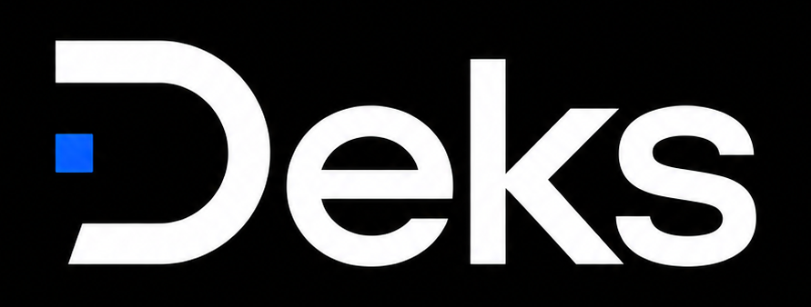
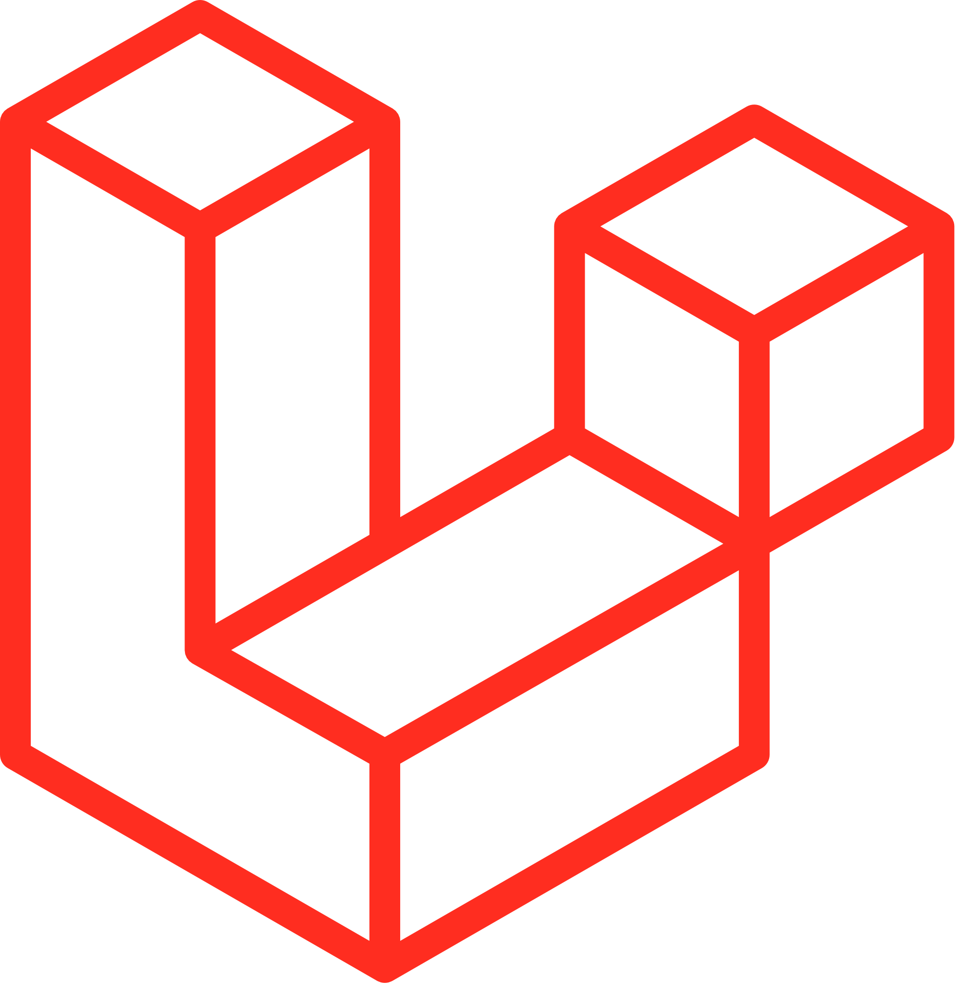
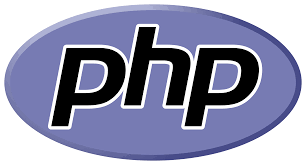
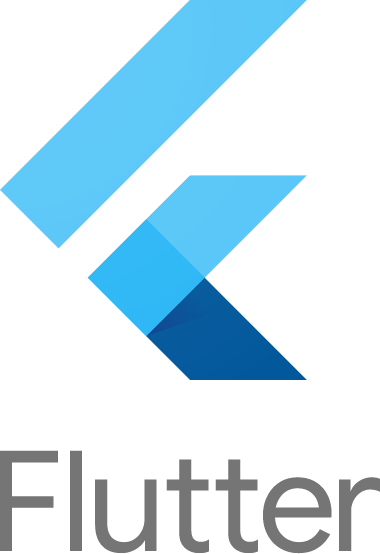
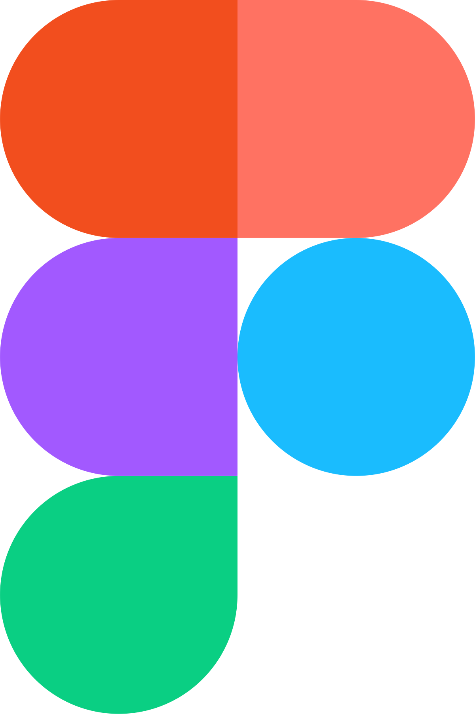

Transformez vos processus en logiciels fiables.
DEKS conçoit des applications métiers, ERP, CRM, plateformes SaaS, dashboards et automatisations pour aider les entreprises à gagner du temps, mieux collaborer et piloter leur croissance.
Discutez du projet Voir les cas d'usageÀ propos
DEKS conçoit des solutions logicielles pour les opérations réelles des entreprises.
Nous partons de vos processus, de vos contraintes et de vos objectifs. Ensuite, nous concevons un logiciel utile au quotidien : clair pour les équipes, fiable pour les dirigeants et capable d'évoluer avec l'entreprise.
Compréhension métier
Livraison structurée
Maintenance durable
Vision long terme
Comprendre
Clarifier le besoin, les rôles, les données et les priorités.
Construire
Développer un outil simple, robuste et adapté aux usages réels.
Faire évoluer
Maintenir, améliorer et accompagner l'adoption dans le temps.
Solutions
Choisissez le type de logiciel qui correspond à votre besoin
Chaque solution est présentée comme un outil métier concret : ce que vos équipes pourront mieux suivre, automatiser ou piloter.
Applications métiers
Pour remplacer les fichiers dispersés par un outil interne adapté à vos demandes, validations, clients, équipes et opérations quotidiennes.
Applications mobiles métier
Pour donner aux équipes terrain un accès simple aux données, aux formulaires, aux notifications et au suivi des interventions.
ERP & CRM
Pour centraliser la relation client, les ventes, le stock, la facturation et le suivi d'activité dans un système clair.
Plateformes SaaS
Pour lancer ou structurer un produit en ligne avec comptes utilisateurs, espaces clients, abonnements et exploitation continue.
Automatisation des processus
Pour réduire les tâches répétitives avec des relances, notifications, factures, validations et workflows mieux coordonnés.
Intégrations API
Pour connecter vos outils, paiements, bases de données et services externes afin d'éviter les ressaisies et pertes d'information.
Preuves
Des repères concrets pour avancer avec confiance.
Après avoir clarifié le besoin, le prospect veut savoir si l'équipe peut livrer. Ces indicateurs montrent notre expérience, notre continuité et notre exigence de résultat.
Clients accompagnés
Des organisations accompagnées pour structurer leurs opérations, fiabiliser leurs données et gagner en visibilité.
Projets livrés
Des logiciels métiers, plateformes, dashboards et automatisations pensés pour résoudre des besoins opérationnels précis.
Qualité & continuité
Un projet logiciel ne s'arrête pas à la livraison : nous prévoyons la maintenance, les évolutions et l'amélioration continue.
Témoignages
Des clients qui apprécient la clarté, le suivi et la fiabilité.
Ces retours d'exemple rassurent sur la façon de travailler avec DEKS : écoute, méthode, communication et solution réellement utile.
Discutez du projetMéthode
Une équipe structurée pour concevoir des logiciels fiables

De l'idée au logiciel opérationnel
DEKS accompagne les entreprises depuis la compréhension du besoin jusqu'à la mise en production. Nous clarifions les processus, structurons les données, développons les fonctionnalités prioritaires et assurons la maintenance pour que le logiciel reste fiable dans le temps.
- Analyse des besoins et des processus métier
- Architecture du logiciel et parcours utilisateurs
- Structuration des données et tableaux de bord
- Connexions API et intégration avec vos outils
- Sécurité, accès utilisateurs et traçabilité
- Automatisation des workflows critiques
- Maintenance, amélioration et évolution continue







Cas d'usage
Des problèmes concrets que nous pouvons résoudre

Centraliser les clients, commandes, stocks et factures dans un seul outil.
Un logiciel métier pour suivre les opérations sans multiplier les fichiers et les ressaisies.
En savoir plus
Automatiser les validations, relances et notifications internes.
Des workflows clairs pour accélérer les décisions et réduire les tâches répétitives.
En savoir plusCréer un tableau de bord pour piloter l'activité.
Des indicateurs simples pour suivre ventes, clients, équipes, stocks ou performances.
En savoir plusConnecter vos outils pour éviter la double saisie.
APIs, paiements, CRM, formulaires et bases de données synchronisés dans un flux fiable.
En savoir plusDonner aux équipes terrain une application mobile.
Collecte de données, suivi des interventions, notifications et synchronisation avec le système central.
En savoir plusModerniser une application existante sans tout recommencer.
Audit, maintenance, amélioration progressive et sécurisation d'un outil déjà utilisé.
En savoir plus